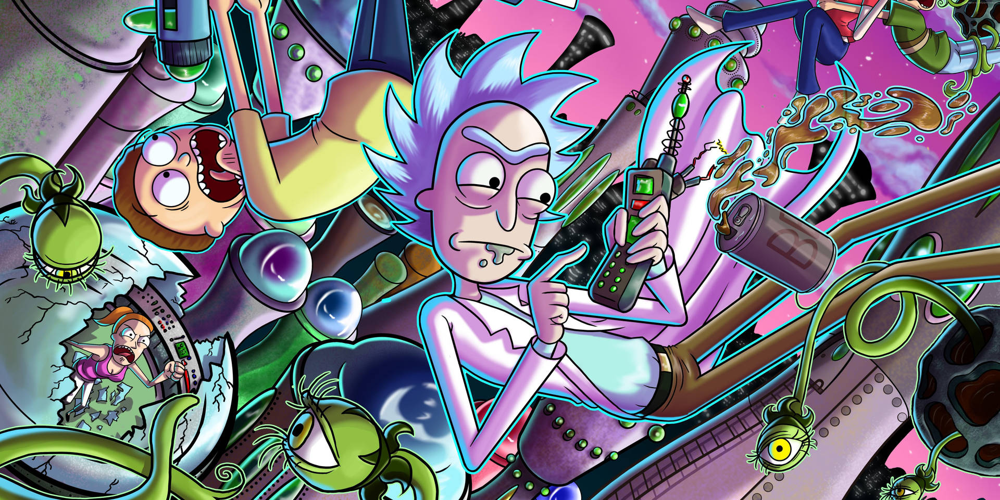

Rick and Morty é uma série de animação para adultos que segue as aventuras de um cientista genial e excêntrico, Rick Sanchez, e seu neto Morty Smith. Criada por Justin Roiland e Dan Harmon, a série estreou em 2013 e rapidamente se tornou um fenômeno cultural, conhecida por seu humor irreverente, enredos criativos e reflexões filosóficas.
Rick, um inventor alcoólatra com um passado misterioso, arrasta seu neto Morty em perigosas e hilárias jornadas através do tempo, espaço e dimensões alternativas. Cada episódio explora novas realidades e criaturas bizarras, enquanto Rick e Morty enfrentam desafios que variam de encontros com alienígenas a dilemas éticos profundos.
A série é famosa por seu humor negro, sátira social e referências à cultura pop. Com personagens memoráveis como Summer, a irmã mais velha de Morty; Jerry, o inseguro pai de Morty; e Beth, a mãe decidida e filha de Rick, o show também aborda as complexas dinâmicas familiares.
Além de sua narrativa inovadora, Rick and Morty cativa o público com sua capacidade de misturar comédia insana com momentos de introspecção profunda, tornando-se uma série única e obrigatória para os fãs de ficção científica e comédia.